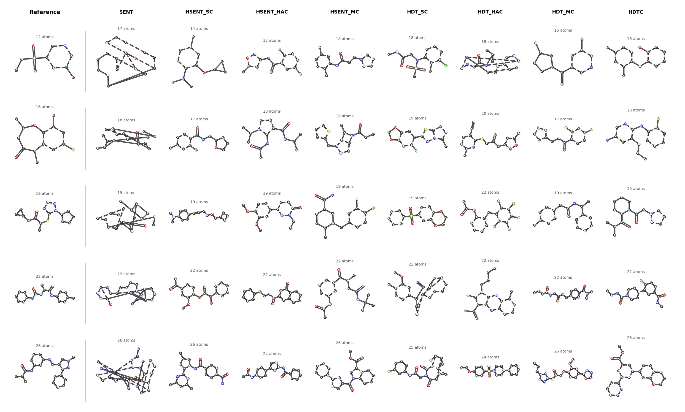

Autoregressive models for molecular graph generation typically operate on flattened sequences of atoms and bonds, discarding the rich multi-scale structure inherent to molecules. We introduce MOSAIC (Multi-scale Organization via Structural Abstraction In Composition), a framework that lifts autoregressive generation from flat token walks to compositional, hierarchy-aware sequences. MOSAIC provides a unified three-stage pipeline: (1) hierarchical coarsening that recursively groups atoms into motif-like clusters using graph-theoretic methods (spectral clustering, hierarchical agglomerative clustering, and motif-aware variants), (2) structured tokenization that serializes the resulting multi-level hierarchy into sequences that explicitly encode parent-child relationships, partition boundaries, and edge connectivity at every level, and (3) autoregressive generation with a standard Transformer decoder that learns to produce these structured sequences.
We evaluate MOSAIC on the MOSES and COCONUT molecular benchmarks, comparing four tokenization schemes of increasing hierarchical expressiveness. Our experiments show that hierarchy-aware tokenizations improve chemical validity and structural diversity over flat baselines while enabling control over generated substructures. MOSAIC provides a principled, modular foundation for structure-aware molecular generation.

Molecules generated by MOSAIC across different tokenization schemes (SENT, HSENT, HDT variants) compared to reference molecules, showing increasing structural fidelity with hierarchy-aware tokenizations.Graph learning Benchmark Repository